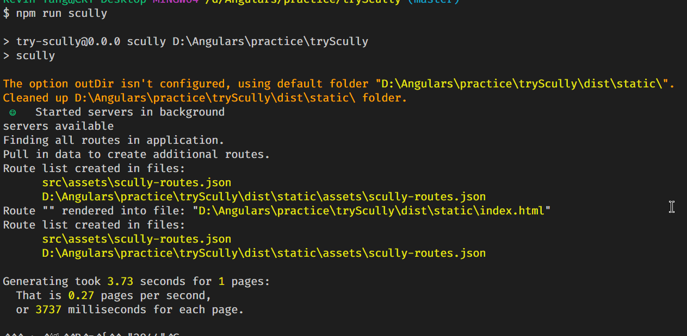
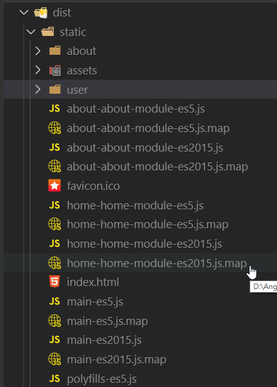
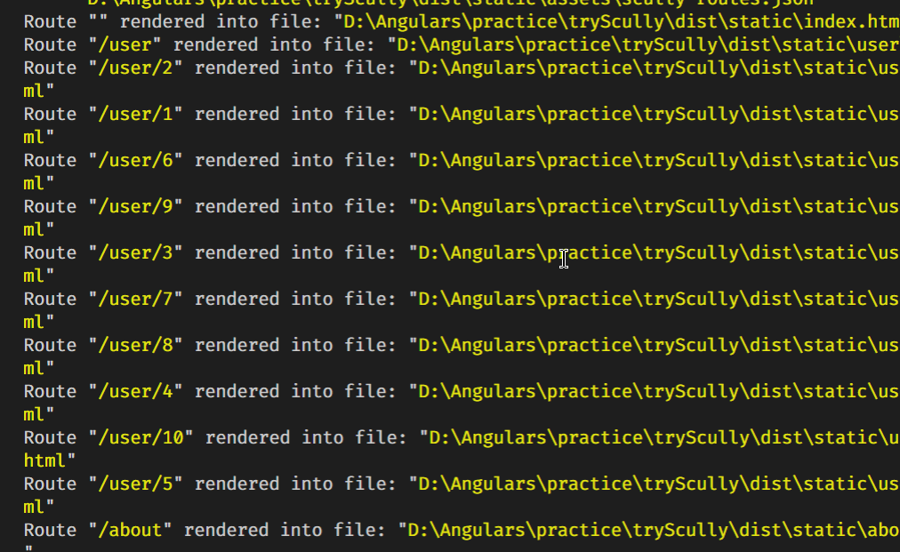
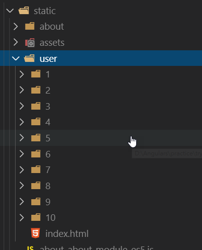

JAMStack 這名詞出來有一段時間了，JavaScript+API+Markdown = Static Site Generator，從早期的 Hexo ，到後起新秀 Gatsby、Gridsome 等，但 Angular 卻一直都沒有對應的框架，直到去年年底(2019/12)，由 Aaron Frost、Sander Elias、Jorge Cano、Anderes Villanueva 等人開發出 Scully 後，Angular 正式有了第一套靜態網站產生器了
需求
必須是 Angular 9 的專案
起手式
-
新的 Angular 專案
-
加入
scullyio，ng add @scullyio/initpackage.json新增兩行 scripts 用來執行scully指令app.component.ts注入IdleMonitorService- 新增
scully.config.js檔案 polyfills.ts，加入所需的 polyfill
-
第一次啟動
- 注意事項: Angular 專案內至少要有一個路由設定，不然目前版本的 scully 會壞掉
-
ng build -
npm run scully
使用範例 1
網址有
aboutuser/user/:id
當建立完上列的 component 重新執行 build 和 scully 後，在 dist/static 的資料夾下應可看到這些內容

但當執行到 user/1 時，會發現該頁面不存在，這是因為我們還沒有告訴 scully 有哪些對應的資料需要被產生，這裡需要多做一個設定，還記得一開始安裝 scully 時，會多產生一個 scully.config.js 檔案，我們可以從這邊設定相關的資訊
1 | exports.config = { |
- 在 routes 的地方告訴 scully 路由規則及處理方式
例如
1 | routes: { |
/user/:id需要處理的路由type: 'json'回傳的資料格式id:{..}需要處理的變數名稱- url: 從哪一個 API 取值
- property 取值回來所對應的欄位名稱
當設定完成後，重新在執行一次 npm run scully，就會看到 scully 會根據我們所設定的規則去撈 API 的資料回來產生對應的靜態檔案


使用範例 2
要使用 Scully 所提供的 Blog 範本，可透過 ng g @scullyio/init:blog 來產生相關的檔案
如果要產生一個新的 Post，可以執行 ng g @scullyio/init:post --name="some title here"，就會幫你在 blog 資料夾下產生一個 Markdown 檔案
細節的部份可以自己動手做看看